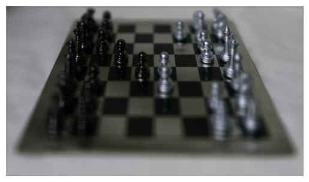
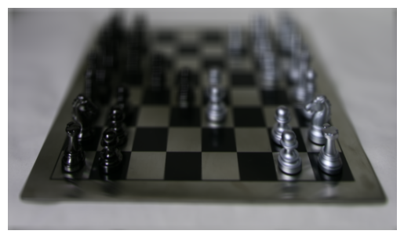
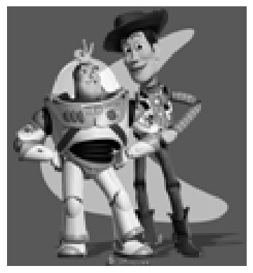

CS 180: Intro to Computer Vision and Computational Photography, Fall 2024
Final Project: Lightfield Cameras
Ian Dong
Overview
For this project, I reproduced the effects from a Lytro camera using real lightfield data via shifting and averaging. The images were captured over a plane orthogonal to the optical axis which helps to achieve the complex effects shown below.Section I: Depth Refocusing
Depth Refocusing
For this part of the project, I took in all of the images and found the center one as the reference image. The naive method would be to simply average these images without any shifting. This, however, will produce an image which is sharp around the far-away objects but blurry around the nearby ones. To address this, I shifted the images appropriately around the reference image and then used a constant to vary this shift. This is the following equation I used: $$ \text{(shift_x, shift_y)} = c \cdot (\text{(reference_x, reference_y)} - \text{(center_x, center_y)})$$ Here are some images and gif with varying levels of $c$.
|

|

|

|
As shown in the gif, the depth gets refocused on different parts of the image based on the value of $c$. The far-away objects become blurry when $c$ is negative and the nearby objects become blurry when $c$ is positive.
Section II: Aperture Adjustment
Aperture Adjustment
In this section, I simulated changing the aperture which affects the focused image regions. While maintaining the same $c$ value, I varied the radius away from the center and used only those images within the circle for my final averaged image. Although I used fewer images compared to before, the resulting image was more focused in the center. Here are some of the images and gif with varying radii.
|
|
|

|
As shown in the gif, the center pieces of the image are in focus while the outer pieces shift in their blurriness. This demonstrates the effect of changing the aperture.
Section III: Summary
Learnings
It was very interesting to see how I could simulate the effects of a Lytro camera using real lightfield data. I learned how to shift and average images to achieve the desired effects and how to vary the shift to get different results. I also learned how to simulate changing the aperture to focus on different parts of the image.
Final Project: Gradient Domain Fusion
Overview
The second project that I worked on explored gradient-domain processing and how it can be used to seamlessly blend an object or texture from a source image into a target image. I used the Poisson blending algorithm to achieve this effect. The images below show the source and target images as well as the final blended image.Section I: Toy Problem
Toy Problem
In the first part of the project, I found the best pixels to reconstruct a toy problem. The insight is that we care much more about the gradient of an image instead of the overall intensity. This means we can set up the problem as finding values for the target pixels that maximally preserve the gradient of the source region without changing any of the background pixels. I formulated this objective as a least squares problem and tried to minimize the following three objectives. $$ \begin{align*} (v(x + 1, y) - v(x, y) &- ((s(x + 1, y) - s(x, y))))^2 \\ (v(x, y + 1) - v(x, y) &- ((s(x, y + 1) - s(x, y))))^2 \\ (v(1, 1) &- s(1, 1))^2 \end{align*} $$ where $x$ and $y$ are the gradients from an image $s$ and $v$ is the reconstructed resulting image. For the toy problem, I was able to solve this least squares problem to recover the original image.
|

|
|
As shown above, the reconstructed image is very similar to the original image. Both are a bit grainy because they were small and blown up to be easily viewed.
Section II: Poisson Blending
Poisson Blending
For the next part, I worked on Poisson blending. This was very similar to the above toy problem but instead focused on the pixels inside of the mask. First, I chose an image to put into the foreground of my original image. Since the interactive drawing tool wasn't quite working, I manually created the mask to what I wanted the final image to look like. I also passed in the original image because I wanted to make sure that the background of the final image was the same as the original image outside of where I placing the mask. Let $f$ be the final image, $t$ be the background image, and $s$ be the foreground image where we are trying to place $s$ into $t$ to create $f$. There were three types of equations to solve:
-
If the pixel in the final image $f$ is outside of the mask, take the pixel from the target image $t$.
- $f[i, j] = t[i, j]$
-
If the pixel and its four neighbors in the final image $f$ are all inside of the mask, try to match the gradients in $f$ with the gradients in the source image $s$.
- $f[i, j] - f[i - 1, j] = s[i, j] - s[i - 1, j]$
- $f[i, j] - f[i + 1, j] = s[i, j] - s[i + 1, j]$
- $f[i, j] - f[i, j - 1] = s[i, j] - s[i, j - 1]$
- $f[i, j] - f[i, j + 1] = s[i, j] - s[i, j + 1]$
-
If the pixel and its four neighbors in the final image $f$ are all inside of the mask, try to match the gradients in $f$ with the gradients in the source image $s$.
- $f[i, j] - f[i - 1, j] = s[i, j] - s[i - 1, j]$
- $f[i, j] - f[i + 1, j] = s[i, j] - s[i + 1, j]$
- $f[i, j] - f[i, j - 1] = s[i, j] - s[i, j - 1]$
- $f[i, j] - f[i, j + 1] = s[i, j] - s[i, j + 1]$
-
If the pixel and its four neighbors in the final image $f$ are not all inside of the mask, try to match the gradients for $f$ and $t$ with the gradients in $s$
- $f[i, j] - t[i - 1, j] = s[i, j] - s[i - 1, j]$
- $f[i, j] - t[i + 1, j] = s[i, j] - s[i + 1, j]$
- $f[i, j] - t[i, j - 1] = s[i, j] - s[i, j - 1]$
- $f[i, j] - t[i, j + 1] = s[i, j] - s[i, j + 1]$
|
|
|